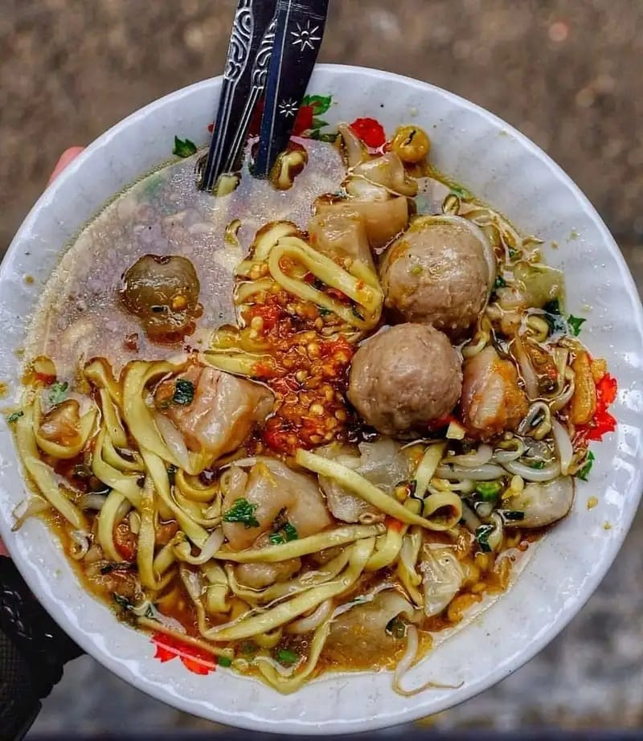

| Mie kocok menggunakan bahan dasar mie kuning yang dihidangkan bersama kuah dari kaldu sapi. Kalian banyak menemukan makanan khas Sunda ini di daerah Bandung. Mie kocok biasanya disajikan dengan tauge yang sudah direbus, bakso, irisan kikil, dengan taburan daun seledri, daun bawang, dan bawang goreng. Nama mie kocok berasal dari cara memasak kuliner ini, yaitu pada proses memasaknya dengan mengocok-ngocok mie dalam wadah khusus sambil dicelupkan ke dalam air panas. |  |
| (Sumber: www.orami.co.id) |